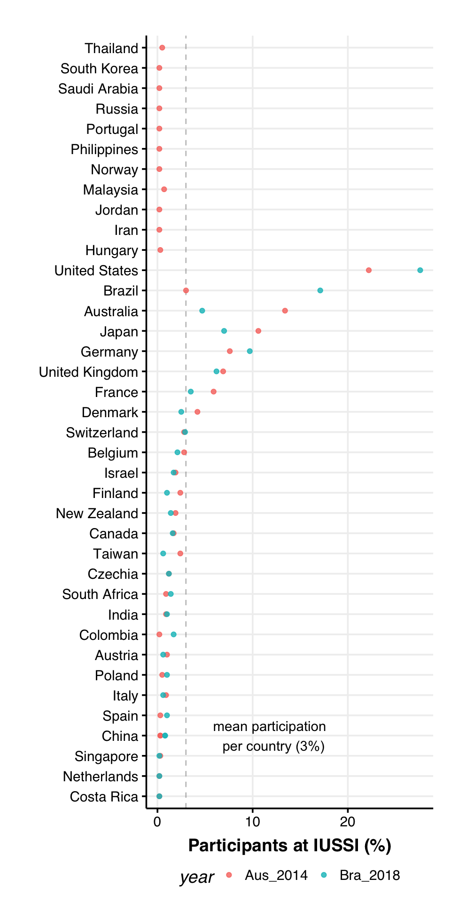

Why RMarkdown?
RMarkdown combines the programming power of R and the text formatting features of markdown language. For example, this HTML was generated using a single RMarkdown file which combined code chunks and plain text. Throughout the page, the code-chunks are shown in grey boxes and the corresponding output of the code chunks are shown in white boxes.
This document introduces the user to the following:
The following code chunk assigns default values for echo, warning and message for the whole document. However, the default values can always be overriden and specified for each individual chunks.
knitr::opts_chunk$set(echo = TRUE)
knitr::opts_chunk$set(warning = F)
knitr::opts_chunk$set(message = F)
## For more inspiration on customizing the html output, refer to the following:
# https://bookdown.org/yihui/rmarkdown/html-document.html#table-of-contentsFor this tutorial, we will explore the data of past participants for a conference (IUSSI) to get a sense of the demography of the attendees.
Data contains the final list of participants that attended the past two IUSSIs (2014 and 2018). Each year’s data is available as a csv file (2014_participants_list_final.csv and 2018_participants_list.csv).
rm(list=ls())library(PACKAGE_NAME)read.csv() functionrm(list = ls())
library(tidyverse)
library(countrycode)
# Load data
dat.2014 <- read.csv("./data/2014_participants_list_final.csv", header = T, stringsAsFactors = F)
dat.2018 <- read.csv("./data/2018_participants_list.csv", header = T, stringsAsFactors = F)Discuss the following:
headerstringsAsFactorsIntroduce components of the tidyverse package
%>%glimpse()group_by()summarise()arrange()mutate()# Let's peak into the data
dat.2014 %>% as_tibble() %>% head()## # A tibble: 6 x 8
## title first_name last_name institution city country email registration_ty…
## <chr> <chr> <chr> <chr> <chr> <chr> <chr> <chr>
## 1 Profe… Patrick Abbot "Vanderbilt… NASH… USA patri… Early Bird Dele…
## 2 Ms Nurdyana Abdul Ra… "Australian… ST L… AUSTRA… nurdy… Early Bird Stud…
## 3 Dr Rusleyd Abreu "Universida… RIO … BRAZIL rusle… Early Bird Dele…
## 4 Dr Rachelle Adams "Center For… COPE… DENMARK rmmad… Early Bird Dele…
## 5 Dr Hiroyuki Ai "Fukuoka Un… FUKU… JAPAN ai@fu… Early Bird Dele…
## 6 Dr Denise Ar… Alves "University… PIRA… BRAZIL daalv… Early Bird Dele…# Let's summarize the paricipants by country
dat.per.country.2014 <-
dat.2014 %>% group_by(country) %>%
summarise(participants_2014 = n()) %>% arrange(desc(participants_2014)) %>%
# country names are in different formats;change them to a common one (iso3c format)
mutate(country.iso3c = countrycode(country,origin='country.name', destination='iso3c'))
# How many countries were present?
dat.per.country.2014 %>% nrow()## [1] 39# Any unknown countries?
# dat.per.country.2014 %>% filter(is.na(country.iso3c)) # nope
# What's the median number of participants per country?
dat.per.country.2014 %>% pull(participants_2014) %>% median()## [1] 5# Let's take a look at the top 15 and bottom 15 countries by participation
dat.per.country.2014 %>% head(15)## # A tibble: 15 x 3
## country participants_2014 country.iso3c
## <chr> <int> <chr>
## 1 USA 128 USA
## 2 AUSTRALIA 77 AUS
## 3 JAPAN 61 JPN
## 4 GERMANY 44 DEU
## 5 UNITED KINGDOM 40 GBR
## 6 FRANCE 34 FRA
## 7 DENMARK 24 DNK
## 8 BRAZIL 17 BRA
## 9 BELGIUM 16 BEL
## 10 SWITZERLAND 16 CHE
## 11 FINLAND 14 FIN
## 12 TAIWAN 14 TWN
## 13 ISRAEL 11 ISR
## 14 NEW ZEALAND 11 NZL
## 15 CANADA 10 CANdat.per.country.2014 %>% tail(15)## # A tibble: 15 x 3
## country participants_2014 country.iso3c
## <chr> <int> <chr>
## 1 HUNGARY 2 HUN
## 2 PR CHINA 2 CHN
## 3 SINGAPORE 2 SGP
## 4 SPAIN 2 ESP
## 5 COLOMBIA 1 COL
## 6 COSTA RICA 1 CRI
## 7 IRAN 1 IRN
## 8 JORDAN 1 JOR
## 9 NETHERLANDS 1 NLD
## 10 NORWAY 1 NOR
## 11 PHILIPPINES 1 PHL
## 12 PORTUGAL 1 PRT
## 13 RUSSIA 1 RUS
## 14 SAUDI ARABIA 1 SAU
## 15 SOUTH KOREA 1 KOR# # Get a glimpse
# dat.2018 %>% glimpse()
# Let's summarize the paricipants by country
dat.per.country.2018 <-
dat.2018 %>% group_by(country) %>%
summarise(participants_2018 = n()) %>% arrange(desc(participants_2018)) %>%
# country names are in different formats;change them to a common one (iso3c format)
mutate(country.iso3c = countrycode(country,origin='country.name', destination='iso3c'))
# Check for unknown country inputs
# dat.per.country.2018 %>% filter(is.na(country.iso3c)) # none found
# there is one participant from an unknown country; excluding them from the data
dat.per.country.2018 <- na.omit(dat.per.country.2018)
# Calculate the perecentages for country-wise participation
dat.per.country <- dat.per.country.2014 %>%
left_join(dat.per.country.2018, by="country.iso3c") %>%
select(country.iso3c, participants_2014, participants_2018, everything()) %>%
mutate(Aus_2014 = round(participants_2014/sum(participants_2014)*100,1)) %>%
mutate(Bra_2018 = ifelse(is.na(participants_2018),
NA,
round(participants_2018/sum(na.omit(participants_2018))*100,1)))
# convert counrty iso codes to names for easy labeling in plots
dat.country.year <-
dat.per.country %>%
select(country.iso3c, Aus_2014, Bra_2018) %>%
pivot_longer(-country.iso3c, names_to = "year", values_to = "percentage") %>%
mutate(country.name = countrycode(country.iso3c, origin = 'iso3c', destination = 'country.name'))
# mean percent of participants from a country
mean.percent <- dat.country.year %>% pull(percentage) %>% na.omit() %>% mean()Participants from 5 countries (USA, Australia, Japan, Germany and UK) account for 60.76% of all participants in IUSSI 2014 and 52.59% in IUSSI 2018.
The following plot presents the percentage of IUSSI participants from different countries from the previous two IUSSIs (Aus_2014 = IUSSI 2014 in Australia, Bra_2018 = IUSSI 2018 in Brazil)
source(file = "./functions/theme_publication.R")
ggplot(dat.country.year,
aes(x=reorder(country.name, percentage),
y=percentage, color=year)) +
geom_hline(yintercept = mean.percent, color="grey60", alpha=0.6, lty=2) +
geom_point(size=1.5, alpha=0.8) +
labs(x = "",
y = "Participants at IUSSI (%)") +
coord_flip() +
theme_Publication() +
annotate("text", x = 4, y = 12,
label = paste0("mean participation \n per country (",round(mean.percent,1),"%)"))
In case you like tables or absolute counts over proportions, here is a searchable table that provides the number of participants, per country, that attended the previous two IUSSIs.
library(DT)
participants.country.year <-
dat.per.country %>% select(country = country.x,
IUSSI_2014 = participants_2014,
IUSSI_2018 = participants_2018)
DT::datatable(participants.country.year)Method:
# Load the data
gen.dat.2014 <- read.csv("./data/genderized_data/genderized_2014_IUSSI.csv", header = T, stringsAsFactors = F)
gen.dat.2018 <- read.csv("./data/genderized_data/genderized_2018_IUSSI.csv", header = T, stringsAsFactors = F)
# define the cutoff for count per name in databse and probability of gender given name
count_cutoff <- 10
prob_cutoff <- 0.9
f.gen.dat.2014 <-
gen.dat.2014 %>%
select(country,
gender,
count=genderCount,
prob=genderProbability) %>%
filter(count > count_cutoff) %>% # 512/576 participants left at count_cutoff = 10
arrange(count) %>%
filter(prob>prob_cutoff) %>% # 461/576 participants left at count_cutoff = 10 and prob_cutoff = 0.9
group_by(country, gender) %>%
summarize(participants_2014 = n()) %>%
mutate(country.iso3c = countrycode(country, origin='country.name', destination='iso3c'))
f.gen.dat.2018 <-
gen.dat.2018 %>%
select(country, gender,
count=genderCount,
prob=genderProbability) %>%
filter(count > count_cutoff & prob > prob_cutoff) %>% # 417/521 participants left after filtering
arrange(count) %>%
group_by(country, gender) %>%
summarize(participants_2018 = n()) %>%
mutate(country.iso3c = countrycode(country, origin='country.name', destination='iso3c'))The results from genderizer.io were filtered to keep only participant names with a count greater than 10 in the database, and with probability of gender assignment higher than 0.9
Post-filtering, a total of 461 (out of 576) participants in 2014 and 417 (out of 521) participants in 2018 remained.
gender.ratio <-
f.gen.dat.2014 %>%
group_by(gender) %>%
summarize(IUSSI_2014=sum(participants_2014)) %>%
left_join((f.gen.dat.2018 %>%
group_by(gender) %>%
summarize(IUSSI_2018=sum(participants_2018))), by="gender")
library(kableExtra)
gender.ratio %>%
kable() %>%
kable_styling(bootstrap_options = "striped", full_width = F, position = "left")| gender | IUSSI_2014 | IUSSI_2018 |
|---|---|---|
| female | 166 | 160 |
| male | 295 | 257 |
The, estimated female:male ratio among selected participants at IUSSI 2014 was 0.56 and at IUSSI 2018 was 0.62.
## Exploring career stage of participants
titles.2014 <- dat.2014 %>% pull(title) %>% as.character()
titles.2018 <- dat.2018 %>% pull(degree) %>% as.character()
titles.2014 %>% unique()## [1] "Professor" "Ms" "Dr" "Mrs"
## [5] "Mr" "Miss" "Ass/Prof" "A/Professor"
## [9] "" "Prof" "A/Prof" "Associate Profes"titles.2018 %>% unique()## [1] "Dr." "Post-Doc" "Undergraduate" "Prof."
## [5] "Graduate" "Other" ""## Let's summarize participants by title (career-stage)
dat.2014 %>%
group_by(title) %>%
summarize(freq=n())## # A tibble: 12 x 2
## title freq
## <chr> <int>
## 1 "" 2
## 2 "A/Prof" 2
## 3 "A/Professor" 26
## 4 "Ass/Prof" 1
## 5 "Associate Profes" 1
## 6 "Dr" 256
## 7 "Miss" 51
## 8 "Mr" 120
## 9 "Mrs" 10
## 10 "Ms" 42
## 11 "Prof" 1
## 12 "Professor" 64## Looks like it needs some clean-up
# PIs - c("A/Prof","A/Professor","Ass/Prof","Associate Profes","Prof","Professor")
# Graduate/Undergrads - c("Miss","Mr","Mrs","Ms")
# Dr - most likely postdocs
career.2014 <-
dat.2014 %>%
mutate(degree = ifelse(title %in% c("A/Prof","A/Professor","Ass/Prof","Associate Profes","Prof","Professor"),
"Prof.",title)) %>%
mutate(degree = ifelse(title %in% c("Miss","Mr","Mrs","Ms"),
"Mr/Ms.",degree)) %>%
mutate(degree = ifelse(title %in% c("Dr"),
"Dr.",degree)) %>%
select(-title) %>%
select(degree, everything())
career.2014 <-
career.2014 %>%
group_by(degree) %>%
summarise(freq = n()) %>%
filter(!degree %in% c("")) %>% # removed two with no assignment
mutate(percent = round(freq/sum(freq)*100,1)) %>%
arrange(match(degree, c("Prof.","Dr.","Mr/Ms.")))
career.2018 <-
dat.2018 %>%
group_by(degree) %>%
summarize(freq=n()) %>%
filter(!degree %in% c("")) %>% # removed one with no assignment
mutate(percent = round(freq/sum(freq)*100,1)) %>%
arrange(match(degree, c("Prof.","Dr.","Post-Doc","Graduate","Undergraduate","Other")))The data doesn’t permit a comprehensive count of participants by their career stages since we have terms such as “Dr” that could indicate either a post-doc or a PI.
Additionally, the data for IUSSI 2014 has titles (“A/Prof”,“A/Professor”,“Ass/Prof”,“Associate Profes”,“Prof”,“Professor”) that have been clubbed together as “Prof.” and (Miss“,”Mr“,”Mrs“,”Ms“) that are represented as”Mr/Ms.“.
In future, including the upcoming IUSSI 2022, it would be useful to come up with a standardized way to collect demography data during the registration process.
career.2014 %>%
kable(caption = "IUSSI 2014") %>%
kable_styling(bootstrap_options = "striped", full_width = F, position = "left")| degree | freq | percent |
|---|---|---|
| Prof. | 95 | 16.6 |
| Dr. | 256 | 44.6 |
| Mr/Ms. | 223 | 38.9 |
career.2018 %>%
kable(caption = "IUSSI 2018") %>%
kable_styling(bootstrap_options = "striped", full_width = F, position = "left")| degree | freq | percent |
|---|---|---|
| Prof. | 96 | 17.8 |
| Dr. | 132 | 24.4 |
| Post-Doc | 84 | 15.6 |
| Graduate | 194 | 35.9 |
| Undergraduate | 21 | 3.9 |
| Other | 13 | 2.4 |
The data does show a fairly good representation of graduate students at both IUSSIs.
All code used for this document is available as a RMarkdown file on my Github.